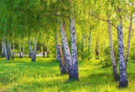
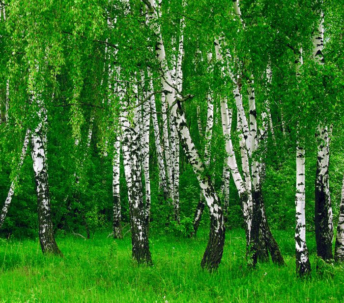

Рослини цього роду відрізняються високим плеоморфізмом; різні автори по-різному розглядають ранг деяких таксонів, що належать до роду. Зазвичай кількість видів оцінюється приблизно в сто[6] або дещо більше ста[7].
В Україні відомі кілька видів беріз. Найпоширенішим видом є береза повисла. Часто трапляється береза пухнаста, яка росте на болотистих місцях. Інші види менш поширені: береза дніпровська, береза низька, береза Клокова.
У науковій медицині використовують бруньки — Gemmae Betulae, листки — Folium Betulae, березовий дьоготь — Ріх Betulae i активоване вугілля — Cabro activatus.
 